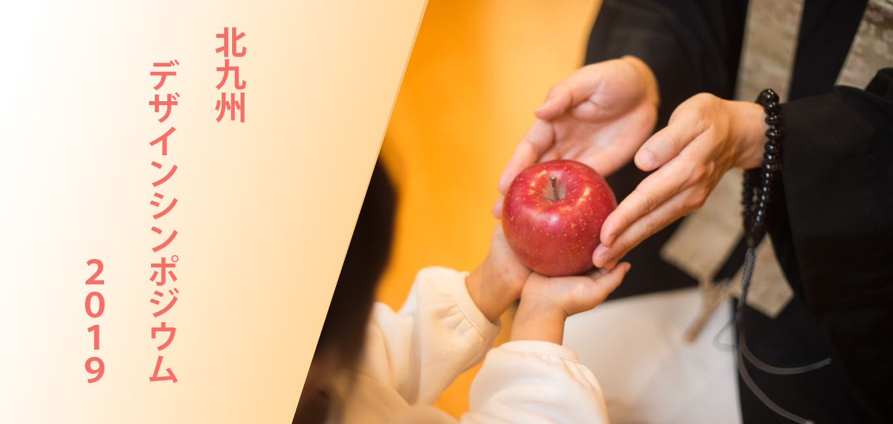

おてらおやつクラブ
事務局長/桂浄薫
マーケティング・寄付担当/福井良應
「おてらおやつクラブ」は、お寺にお供えされるさまざまな「おそなえ」を、仏さまからの「おさがり」として頂戴し、全国のお寺と支援団体、そして檀信徒および地域住民の協力の下、経済的に困難な状況にあるご家庭へ「おすそわけ」することで、貧困問題の解決を目指す活動を行っています。
北九州デザインシンポジウム2019では2018年度グッドデザイン賞・大賞を受賞した、「おてらおやつクラブ」を講師にお招きして、”既存の組織・人・もの・習慣をつなぎ直すだけで機能する「仕組み」の美しさ”について講演いただきます。
令和元年11月29日（金） 18:30～20:00 （交流会 20:30～）
西日本工業大学 小倉キャンパス 303講義室
リバーウォーク大学棟内（北九州市小倉北区室町 1-2-11）
［申込方法］事前申込制・先着順（定員に達し次第受付終了）
お申し込みは下記のリンクより電子申請にてお申し込みください。
パソコンからのお申込みフォーム（外部リンク）
参加費:無料
定員:150名程度
［お問い合わせ］北九州市産業経済局 商業・サービス産業政策課
北九州市小倉北区場内 1番 1号 本庁舎7階 TEL:093-582-2050
北九州市、西日本工業大学